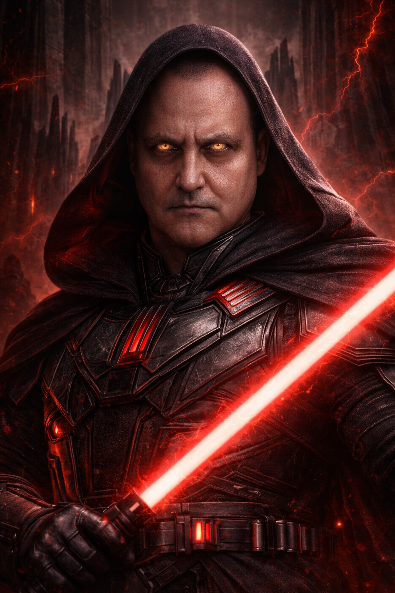

Най-могъщият сит в Империята
Val Tod е смятан за най-могъщия сит в цялата Империя. Той не печели уважение само със сила, а чрез своя ум, стратегическо мислене и почти свръхестествена връзка с тъмната страна на Силата. Неговото присъствие е достатъчно, за да накара цели армии да се преклонят.

Val Tod носи уникален тъмночервен светлинен меч с черно ядро, какъвто никой друг в Галактиката не притежава. Острието му излъчва нестабилна енергия, която символизира абсолютен контрол, разрушение и безпощадна мощ. Според легендите този меч е изкован от древен ситски кристал, способен да усилва гнева и волята на своя господар.
В основата на неговата Империя стои тайният вътрешен кръг 12Б – двадесет и шест безупречно обучени служители, които му се подчиняват безусловно. Те са неговите най-верни съветници, пазители и изпълнители на най-важните му заповеди. Всеки от 12Б е избран не само заради сила, но и заради абсолютна лоялност към Val Tod.
В цялата Империя се говори, че когато 12Б се появят, това означава, че волята на Val Tod вече е изречена и никой не може да ѝ се противопостави.
Още в ранните си години Val Tod показва необикновена чувствителност към Силата, но вместо да търси баланс, той избира да навлезе в най-тъмните ѝ тайни. Докато други ситове разчитат на ярост и груба сила, той овладява изкуството на страха, внушението и пълния психически контрол над противниците си.
След падането на множество ситски владетели, Val Tod не просто заема мястото им – той изгражда нов ред. Така се ражда неговата Империя, управлявана чрез дисциплина, страх и непоколебима вярност. Именно тогава създава и 12Б – своя елитен кръг, който превръща властта му в нещо почти недостижимо.
С времето името му се превръща в легенда. Някои го наричат Сянката на Империята, други – Последният велик сит. Но за своите врагове той е нещо повече: олицетворение на мрака, който не може да бъде победен лесно.
За разлика от много други ситове, Val Tod не е воден единствено от разрушение. Той търси пълен ред под собствена власт и вярва, че страхът е най-сигурният път към подчинение. Именно съчетанието между интелект, безмилостност и невероятна сила го прави най-опасния владетел в Империята.